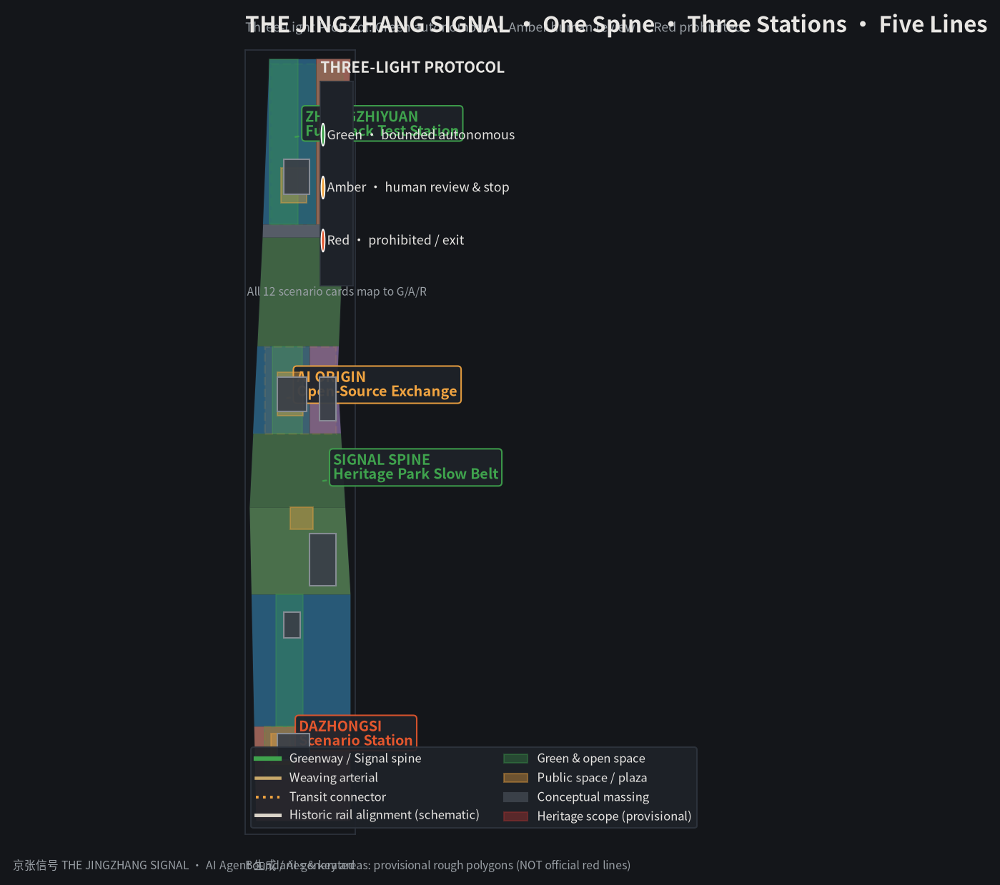
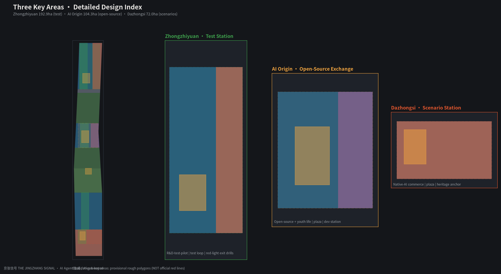
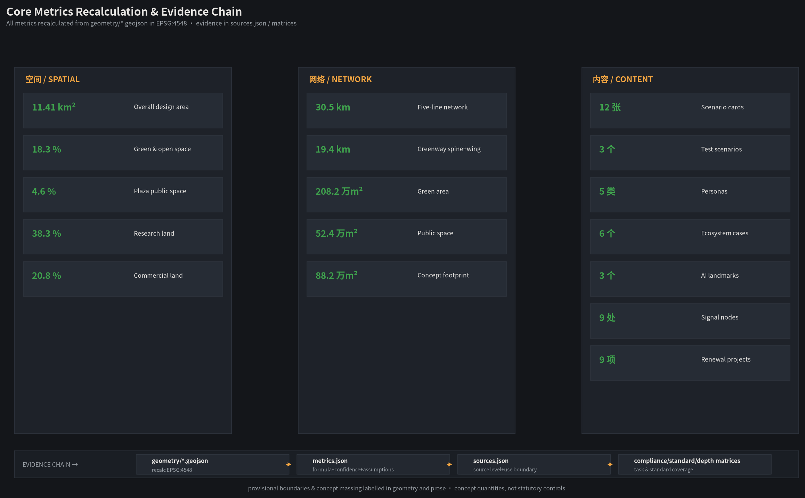
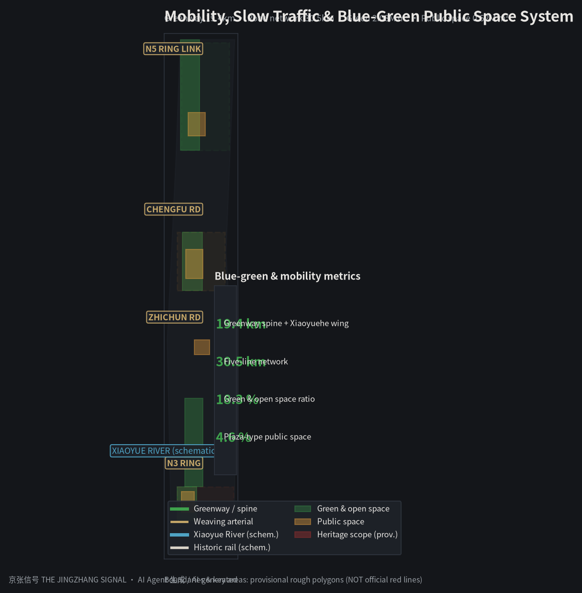
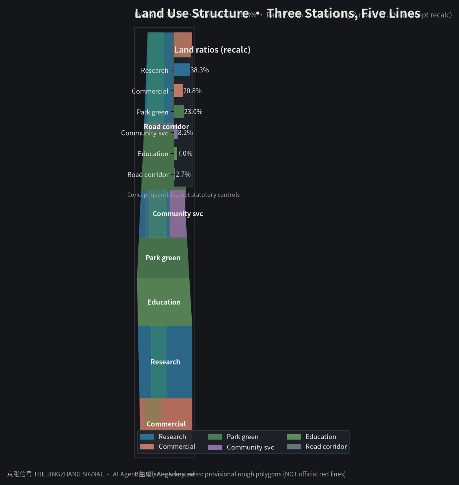

Coordinated Research Area
43.6 km²AI ecosystem, three-areas-two-wings synergy, future city form, brand narrative.
Using the century-long signal history of the Jing-Zhang Railway — manual flags in 1909, autonomous train control on the intelligent Jing-Zhang HSR in 2019 — this proposal introduces the Three-Light Governance Protocol: Green runs autonomously, Amber requires human review, Red is prohibited. Spatial structure: one spine, three stations, five lines. Offline display; authoritative data in GeoJSON, metrics.json and matrices.
Land use, mobility, blue-green network, building renewal and AI scenario nodes on one evidence map; emphasis on design intent, corridors, nodes and public-space networks.

Coordinated Research Area (43.6 km²) → Overall Design Area (11.41 km²) → Key Detailed Design Area (368.4 ha), cascading industry strategy, urban renewal and detailed design.
AI ecosystem, three-areas-two-wings synergy, future city form, brand narrative.
Regulatory-plan-depth renewal: one spine, three stations, five lines, land use, mobility, heritage park belt.
Detailed design of Zhongzhiyuan, AI Origin, Dazhongsi (implementation-scheme depth).
The three key areas function as scenario application, open-source exchange and full-stack test stations.
Native-AI commerce & experience gateway; Juesheng Temple heritage anchor; Three-Light Plaza for governance display; AI+consumer/health/legal amber-review services.
World-class ecosystem hub; research west, living east; Open-Source Plaza for developer gatherings and hackathons; exchange offers code hosting, data sandbox, compute vouchers.
Full-stack autonomy & governance-voice test field; test west, convert east; loop for low-speed autonomy, robot delivery, embodied AI; sole site of red-light exit drills.

12 scenario cards, 3 of which are industry test-and-validation scenarios; each maps to a signal state (G=autonomous, A=review, R=prohibited).
Semi-open test in Zhongzhiyuan, physical interruption & remote takeover (industry test)
Delivery/inspection robots along the spine; restricted zones red-line (industry test)
AI signal timing at N3/Zhichun nodes; effective after authority review (industry test)
1909 manual signals to 2019 intelligent train control; human-guide backup
Voice navigation for elderly/disabled; no automated channels without human backup
Code hosting, data sandbox, compute vouchers; human ops fallback
Medical service navigation in Dazhongsi; conclusions human-reviewed
Compliance Q&A with human-lawyer review channel
Business plans & financing paths; funding commitments never auto-generated
Guides for global conference guests; no identity/trip data collection
Event info along the spine; volume/hours human-reviewed
Full audit trail of red list, amber reviews, green metrics
Recalculated from geometry/*.geojson in EPSG:4548; conceptual quantities under provisional boundaries, not statutory controls.

compliance_matrix.json covers all official 1.3/1.4/1.5 tasks and agent.1-6; standard_matrix.json covers 6 standards; design_depth_matrix.json marks all 15 depth items complete.
| Task | Coverage |
|---|---|
| 1.3.1-1.3.3 | World-class ecosystem · new urban form · high-quality district |
| 1.4.1-1.4.3 | Three-level scope framework & geometry |
| 1.5.1-1.5.3 | Ecosystem · renewal · mobility · heritage park · character · key areas |
| agent.1-6 | Naming/Logo · cases · scenario cards · landmarks · narrative · operations |
Formal judgments rely on formal-ready sources only; background and provisional material is labelled. All assumptions and gaps in assumptions.json.
Formal basis: call announcement, agent taskbook, urban design measures, regulatory planning measures, land classification guide, generative-AI measures, barrier-free law; international cases as mechanism analogies only.
Pending: FAR/height/density controls, building census, ownership, fire, heritage scopes; Three-Light Protocol is a conceptual governance mechanism.
Four gates: deterministic validation, spatial review, visual packaging, professional evidence. Provisional boundaries support intake display only; official polygons required before formal scoring.

